Tutorial 9: Flutter Deployment dengan GitHub Actions dan Microsoft App Center
Pemrograman Berbasis Platform (CSGE602022) — diselenggarakan oleh Fakultas Ilmu Komputer Universitas Indonesia, Semester Genap 2023/2024
Tujuan Pembelajaran
Setelah menyelesaikan tutorial ini, mahasiswa diharapkan untuk dapat:
- Memahami konsep continuous integration dan continuous deployment.
- Memahami konsep dan penggunaan GitHub Actions.
- Memahami konsep dan penggunaan Microsoft App Center.
- Menerapkan continuous integration dan continuous deployment pada aplikasi Flutter menggunakan GitHub Actions dan Microsoft App Center.
- Menerapkan GitHub Actions untuk melakukan build dan release aplikasi Flutter secara otomatis.
Pengenalan CI/CD
CI/CD, singkatan dari Continuous Integration dan Continuous Deployment, merupakan konsep penting dalam pengembangan perangkat lunak yang terkait dengan GitHub Actions. Konsep ini memberikan cara untuk mengotomatisasi dan meningkatkan kualitas serta kecepatan dalam pengembangan perangkat lunak.
Continuous Integration (CI) berfokus pada penggabungan (integrasi) perubahan kode secara terus-menerus ke dalam repositori bersama oleh anggota tim. Saat seorang pengembang melakukan perubahan pada kode dan mengirimkannya ke repositori (seperti yang kita lakukan dengan GitHub), sistem CI akan secara otomatis menjalankan serangkaian tes dan verifikasi untuk memastikan bahwa perubahan tersebut tidak merusak atau mengganggu fungsionalitas yang sudah ada. Dengan kata lain, CI membantu mengidentifikasi masalah lebih awal dalam siklus pengembangan.
Continuous Deployment (CD), pada gilirannya, melibatkan otomatisasi untuk merilis (deployment) perubahan kode yang telah melewati proses CI ke lingkungan produksi atau pengujian. Ketika perubahan kode dinyatakan aman setelah melalui serangkaian pengujian CI, CD memungkinkan untuk menyebarkan perubahan tersebut secara otomatis ke server atau lingkungan lainnya tanpa perlu campur tangan manual. Ini membantu mempercepat proses pengembangan dan meningkatkan kecepatan dalam merespons perubahan kebutuhan bisnis.
Ketika kita menggunakan GitHub Actions dalam CI/CD, setiap kali ada perubahan pada repositori, GitHub Actions dapat memicu alur kerja CI untuk menjalankan pengujian dan verifikasi. Jika semuanya berhasil, alur kerja CD dapat diaktifkan untuk merilis perubahan tersebut ke environment produksi atau pengujian.
Dengan menggunakan CI/CD, tim pengembang dapat memastikan bahwa perubahan-perubahan yang dilakukan tidak merusak kualitas atau kinerja aplikasi. Ini juga mempercepat waktu rilis produk dan meningkatkan efisiensi dalam pengelolaan siklus hidup perangkat lunak secara keseluruhan.
Pengenalan Github Actions
GitHub Actions adalah fitur yang disediakan oleh GitHub untuk memungkinkan otomatisasi dalam siklus pengembangan perangkat lunak. Dengan kata lain, GitHub Actions memungkinkan kita untuk membuat dan menyesuaikan alur kerja otomatis (workflows) untuk menjalankan tugas-tugas tertentu setiap kali ada perubahan pada repositori GitHub.
Workflows ini bisa diatur untuk menjalankan berbagai tindakan atau skrip otomatis, seperti melakukan pengujian (testing), membangun (building) aplikasi, atau merilis (releasing) versi baru. Tujuannya adalah untuk membantu tim pengembang mengotomatiskan proses-proses ini, sehingga mereka dapat fokus pada penulisan kode dan pengembangan fitur tanpa harus terlalu khawatir dengan langkah-langkah administratif.
Misalnya, ketika ada perubahan kode di repositori GitHub, GitHub Actions dapat secara otomatis menjalankan alur kerja yang telah Anda tentukan. Alur kerja tersebut dapat mencakup langkah-langkah seperti menguji apakah perubahan tersebut tidak merusak fungsionalitas yang ada, membangun aplikasi yang baru, dan bahkan merilis versi baru jika diperlukan.
Penting untuk dicatat bahwa GitHub Actions memanfaatkan file konfigurasi khusus (biasanya dengan nama .github/workflows/nama-file.yml) pada repositori. File ini berisi deskripsi langkah-langkah yang harus dijalankan oleh GitHub Actions.
Dengan GitHub Actions, kolaborasi dalam pengembangan perangkat lunak dapat menjadi lebih efisien karena banyak tugas dapat diotomatisasi. Hal ini memberikan fleksibilitas tambahan kepada pengembang dan tim untuk menyesuaikan alur kerja mereka sesuai kebutuhan proyek.
Berikut adalah contoh workflow sederhana yang dapat kita gunakan untuk membangun dan menguji kode aplikasi berbasis JavaScript dan menggunakan Yarn package manager.
name: Build and test
on:
push:
branches:
- main
jobs:
build:
runs-on: ubuntu-latest
steps:
- uses: actions/checkout@v4
- name: Install dependencies
run: yarn install
- name: Build
run: yarn build
test:
runs-on: ubuntu-latest
steps:
- uses: actions/checkout@v4
- uses: actions/setup-node@v4
with:
node-version: 16
- name: Install dependencies
run: yarn install
- name: Run tests
run: yarn test
Pengenalan Microsoft App Center
Microsoft App Center merupakan layanan cloud yang menyediakan berbagai macam fitur untuk memudahkan proses build, test, release, dan monitoring aplikasi. Layanan ini dapat digunakan untuk berbagai macam platform, seperti Android, iOS, Windows, macOS, dan lain-lain. Pada tutorial ini, kita akan menggunakan layanan ini untuk melakukan build dan release aplikasi Flutter secara otomatis.
Microsoft App Center menyediakan banyak sekali fitur keren secara gratis seperti continuous integration, UI testing, continuous delivery, laporan crash dan error dari aplikasi yang ditampilkan secara detail bagaimana log errornya, dan fitur Analytics. Kali ini, kita tidak akan memakai seluruh fitur yang tersedia karena Flutter belum didukung secara resmi oleh App Center. Saat ini, bahasa dan framework yang baru didukung resmi adalah Kotlin, Java, React Native, Xamarin, dan Unity. Pada tutorial kali ini, kita akan fokus ke pembuatan dan perilisan aplikasi pada App Center saja.Untuk lebih jelasnya, kamu dapat membaca dokumentasi App Center secara lebih lanjut.
Tutorial: Pengaturan Dasar pada App Center
Pada tutorial ini, kamu akan men-deploy aplikasi Flutter yang telah kalian buat pada tutorial-tutorial sebelumnya ke App Center. Berikut ini merupakan tahap awal dalam proses deployment aplikasi.
-
Buatlah akun App Center menggunakan akun GitHub kamu (tombol paling atas).
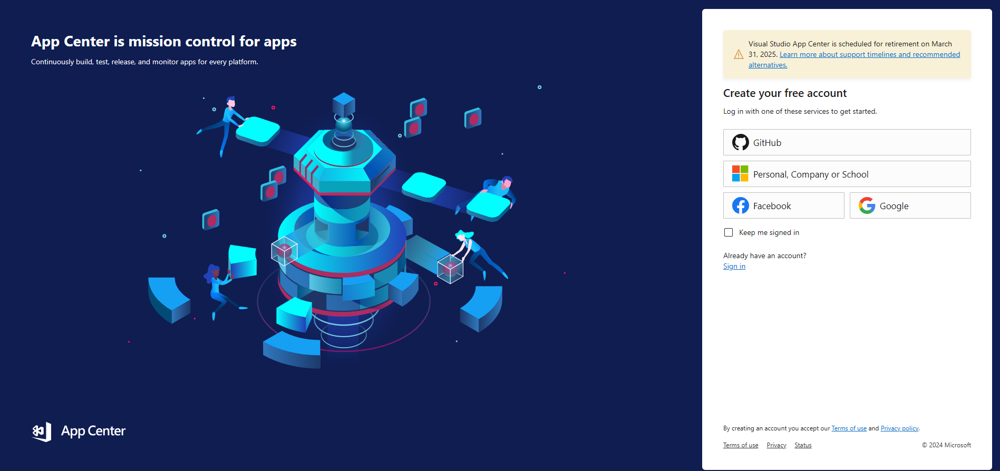
-
Setelah berhasil membuat akun dan sign in, buatlah organisasi baru dengan mengakses menu Add new -> Add new organization. Isi nama organisasi yang kamu inginkan.
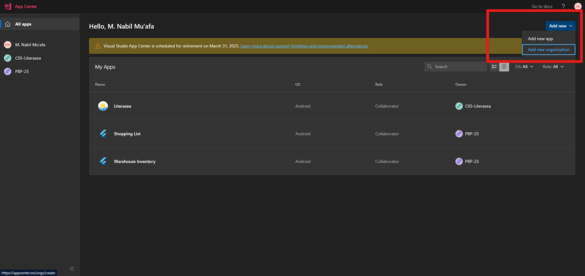
-
Buatlah slot aplikasi baru dengan menekan tombol
Add app.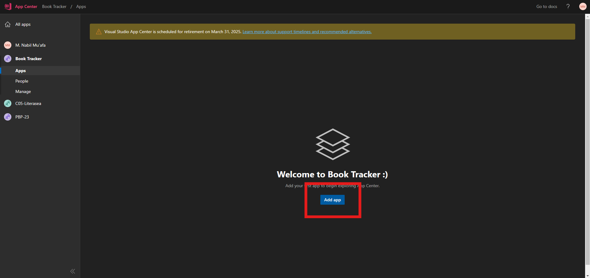
-
Isi nama aplikasi dengan
Book Tracker. Kamu tidak perlu untuk memilih tipe rilis. PilihAndroidsebagai OS danJava / Kotlinsebagai platform. Kemudian, klik "Add new app".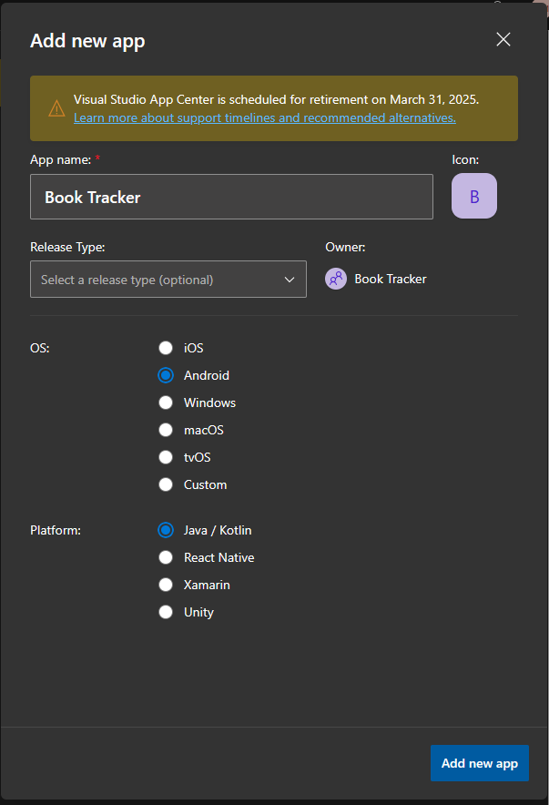
-
Buka menu Distribute dan buka menu Groups.
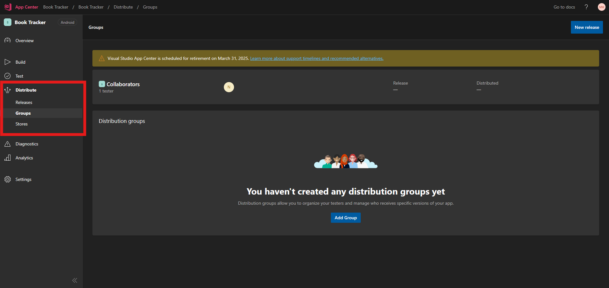
-
Buatlah grup baru dengan menekan tombol "Add Group". Berikan nama
Publicdan berikan akses publik dengan mengubah toggle padaAllow public access. Tekan tombolCreate Groupuntuk membuat grup baru. Hal ini kita lakukan agar APK yang nantinya dibuat oleh App Center dapat diakses secara publik.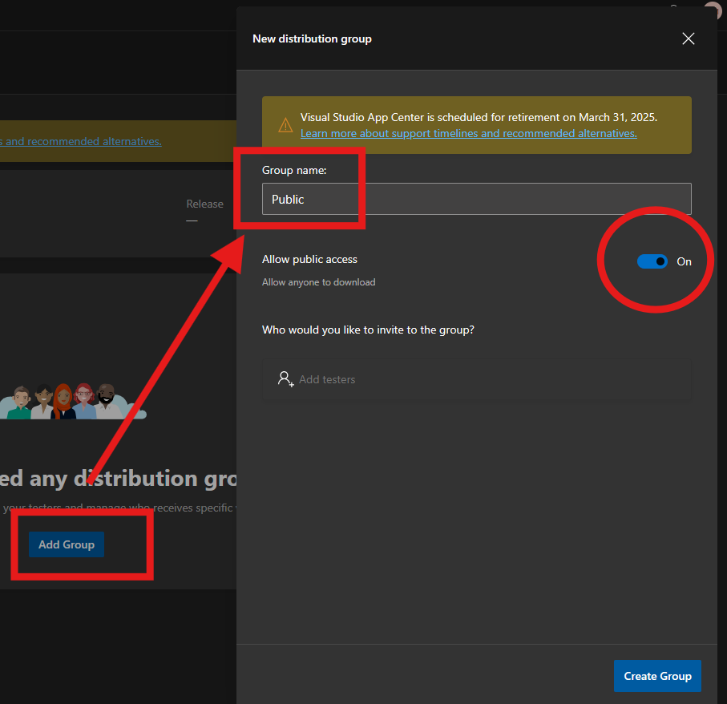
Jika kamu menggunakan organisasi untuk mengorganisasi kode proyekmu, maka ikuti langkah tambahan berikut. Langkah-langkah ini berfungsi untuk memberikan akses repositori kepada App Center pada GitHub.
-
Buka situs Authorized OAuth Apps dengan akun yang terdaftar pada organisasi yang memiliki kode proyek.
-
Klik
App Center. -
Cari nama organisasi yang memiliki kode proyekmu, lalu klik tombol
Grantuntuk memberikan akses organisasi kepada App Center.
Sampai sini, kamu telah melakukan pengaturan dasar pada App Center. Selanjutnya, kamu akan melakukan pengaturan skrip dan pengesahan (sign) pada proyek aplikasi Flutter.
Tutorial: Pengaturan Dasar Pengesahan Aplikasi Flutter
Untuk publikasi aplikasi pada App Center, aplikasi Flutter harus ditandatangani atau disahkan menggunakan key agar aplikasi yang dirilis dijamin keabsahannya. Oleh karena itu, kita akan membuat key untuk aplikasi dan mengatur automasi agar skrip CI/CD (baik yang ada pada GitHub Actions maupun App Center) dapat berjalan dengan baik.
-
Buatlah sebuah keystore.
Untuk pengguna Mac OS atau Linux, jalankan perintah berikut pada Terminal.
keytool -genkey -v -keystore ~/release-keystore.jks -keyalg RSA -keysize 2048 -validity 10000 -alias releaseUntuk pengguna Windows, jalankan perintah berikut pada Command Prompt.
keytool -genkey -v -keystore %userprofile%\release-keystore.jks -storetype JKS -keyalg RSA -keysize 2048 -validity 10000 -alias releaseBerikan keystore tersebut password yang aman dan simpan atau ingat-ingat password tersebut, jangan sampai lupa. Isilah informasi yang dibutuhkan hingga proses selesai. Kemudian, pindahkan berkas tersebut ke dalam root folder proyek aplikasi.
Perintah yang telah kamu jalankan berguna untuk menyimpan keystore file dengan nama
release-keystore.jksdi direktori home kamu dengan aliasrelease.Apabila Terminal atau Command Prompt tidak mengenali perintah
keytool, silakan mengikuti panduan tambahan pada bagian Note di laman web resmi flutter bagian Create an upload keystore untuk memasukkan perintahkeytoolke dalam environment path. -
Tambahkan sintaks berikut pada file
.gitignoreyang ada pada root folder proyek aplikasi agar keystore tidak dihitung masuk sebagai berkas yang ada pada repositori Git. Hal ini dilakukan karena keystore merupakan berkas yang rahasia dan perlu dijaga selayaknya kata sandi sebuah akun. -
Buka berkas
/android/app/build.gradledan cari bagianbuildTypes.buildTypes { release { // TODO: Add your own signing config for the release build. // Signing with the debug keys for now, // so `flutter run --release` works. signingConfig signingConfigs.debug } }Ubahlah bagian tersebut menjadi seperti berikut.
Sampai sini, kamu sudah melakukan pengaturan dasar untuk pengesahan aplikasi. Selanjutnya, kamu akan melakukan modifikasi skrip GitHub Actions dan pembuatan skrip baru untuk membangun berkas aplikasi pada App Center.
Tutorial: Pembuatan Skrip GitHub Actions
-
Hasilkan sebuah base64 string sebagai representasi dari keystore file yang akan kita simpan sebagai environment variable nantinya.
Untuk pengguna Mac OS atau Linux, jalankan perintah
openssl base64 -in release-keystore.jkspada Terminal di root folder untuk menghasilkan base64 string. Simpan string yang dihasilkan untuk sementara waktu.Untuk pengguna Windows, buka root folder proyek pada File Explorer. Kemudian klik kanan, lalu klik
Show more options, setelah itu klikGit Bash here. Sebuah terminal Git Bash akan terbuka.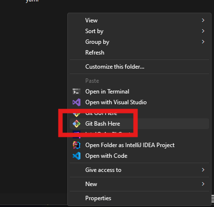
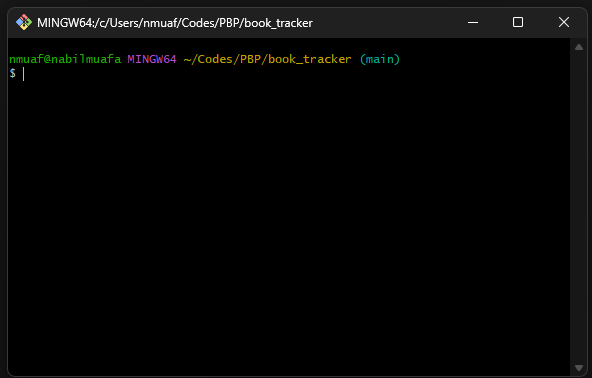
Pada terminal tersebut, jalankan perintah
openssl base64 -in release-keystore.jks. Perintah tersebut akan menghasilkan base64 string. Simpan string yang dihasilkan untuk sementara waktu.Berikut contoh hasil dari menjalankan perintah tersebut.
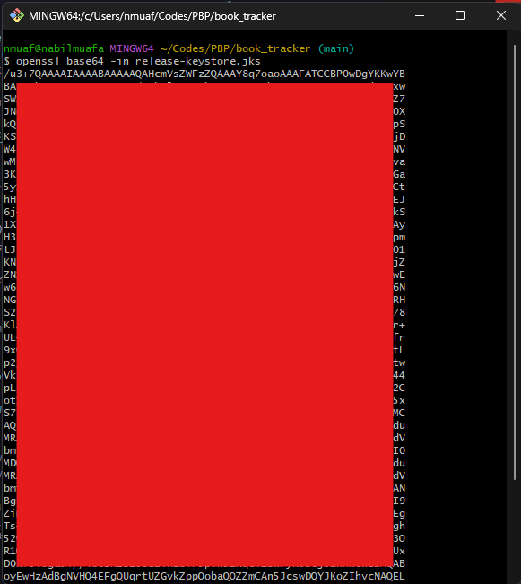
-
Buatlah repository secrets pada repositori GitHub dengan spesifikasi sebagai berikut.
i.
GH_TOKENberisi GitHub (Personal Access) Token dari admin repositori untuk kepentingan automated release.Apabila kamu admin repositori, akses halaman ini untuk membuat sebuah Personal Access Token. Berikan token-mu nama yang unik. Pada bagian Repository access, pilih "Only select repositories" dan pilih repositori proyek Fluttermu. Buka bagian "Repository permissions", lalu berikan akses Read-only ke setidaknya permissions berikut:
- Secrets
Berikan akses Read and write ke setidaknya permissions berikut:
- Actions
- Workflows
- Contents
Salin Personal Access Token yang dihasilkan dan simpan di lokasi lain, karena kamu tidak akan bisa melihat token tersebut lagi melalui GitHub. Setelah itu, isi repository secret
GH_TOKENdengan Personal Access Token yang telah kamu salin.ii.
KEY_JKSberisibase64string dari keystore file yang telah kamu buat sebelumnya.iii.
KEY_PASSWORDberisi kata sandi yang kamu gunakan saat kamu membuat keystore file.Pada akhirnya, halaman repository secrets kamu akan terlihat seperti ini.
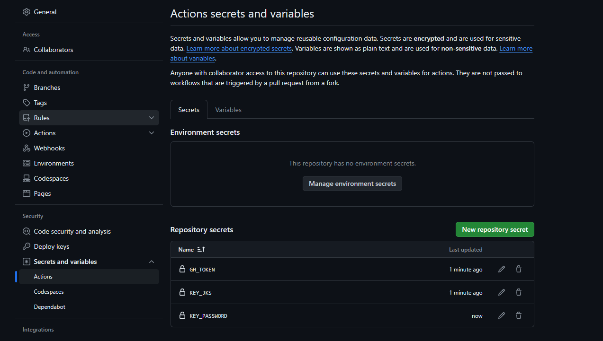
-
Jika belum ada, buatlah folder
.github/workflowspada root folder aplikasi. -
Buatlah tiga berkas baru pada folder
.github/workflowsdengan spesifikasi berikut:Diasumsikan branch
stagingdigunakan untuk menampung kode aplikasi sebelum rilis dan branchmaindigunakan untuk perilisan kode aplikasi.i.
staging.yml; berfungsi untuk mengecek apakah codebase yang ada pada branchstagingbebas dari error saat melakukanflutter analyze. Skrip ini hanya di-trigger saat ada commit pada branchstaging.name: Staging # Controls when the workflow will run on: # Triggers the workflow on push or pull request events but only for the develop branch push: branches: [staging] pull_request: branches: [staging] # A workflow run is made up of one or more jobs that can run sequentially or in parallel jobs: # This workflow contains a single job called "build" build: name: Analyze # The type of runner that the job will run on runs-on: ubuntu-latest steps: - name: Checkout the code uses: actions/checkout@v4 - name: Setup Java uses: actions/setup-java@v3 with: distribution: "zulu" java-version: "11" - name: Setup Flutter uses: subosito/flutter-action@v2 with: channel: "stable" - name: Get packages run: flutter pub get - name: Analyze run: flutter analyzeii.
pre-release.yml; berfungsi untuk mengecek apakah proses build aplikasi dapat berjalan tanpa error. Jika tidak ada error, file APK dapat diakses sebagai artifact. Skrip ini hanya di-trigger saat ada pull request dari branchstagingke branchmain.name: Pre-Release # Controls when the workflow will run on: # Triggers the workflow on pull request events but only for the main branch pull_request: branches: [main] # A workflow run is made up of one or more jobs that can run sequentially or in parallel jobs: # This workflow contains a single job called "Build and Pre-Release APK" releases: name: Build and Pre-Release APK # The type of runner that the job will run on runs-on: ubuntu-latest steps: - name: Checkout the code uses: actions/checkout@v4 - name: Setup Java uses: actions/setup-java@v3 with: distribution: "zulu" java-version: "11" - name: Setup Flutter uses: subosito/flutter-action@v2 with: channel: "stable" - name: Get packages run: flutter pub get - name: Generate Java keystore env: KEY_JKS: ${{ secrets.KEY_JKS }} run: echo "$KEY_JKS" | base64 --decode > release-keystore.jks - name: Build APK env: KEY_PASSWORD: ${{ secrets.KEY_PASSWORD }} run: flutter build apk --split-per-abi - name: Pre-release APK by uploading it to Artifacts uses: actions/upload-artifact@v3 with: name: APKS path: build/app/outputs/flutter-apk/*.apkiii.
release.yml; berfungsi untuk melakukan proses build aplikasi dan perilisan aplikasi sebagai Releases pada repositori GitHub. Skrip ini hanya di-trigger saat ada commit pada branchmain.# This is a basic workflow to help you get started with Actions name: Release # Controls when the workflow will run on: # Triggers the workflow on push events but only for the main branch push: branches: [main] # A workflow run is made up of one or more jobs that can run sequentially or in parallel jobs: # This workflow contains a single job called "Build and Release APK" releases: name: Build and Release APK # The type of runner that the job will run on runs-on: ubuntu-latest steps: - name: Checkout the code uses: actions/checkout@v4 - name: Get version from pubspec.yaml id: version run: echo "::set-output name=version::$(grep "version:" pubspec.yaml | cut -c10-)" - name: Setup Java uses: actions/setup-java@v3 with: distribution: "zulu" java-version: "11" - name: Setup Flutter uses: subosito/flutter-action@v2 with: channel: "stable" - name: Get packages run: flutter pub get - name: Generate Java keystore env: KEY_JKS: ${{ secrets.KEY_JKS }} run: echo "$KEY_JKS" | base64 --decode > release-keystore.jks - name: Build APK env: KEY_PASSWORD: ${{ secrets.KEY_PASSWORD }} run: flutter build apk --split-per-abi - name: Get current date id: date run: echo "::set-output name=date::$(TZ='Asia/Jakarta' date +'%A %d-%m-%Y %T WIB')" - name: Release APK uses: ncipollo/release-action@v1 with: allowUpdates: true artifacts: "build/app/outputs/flutter-apk/*.apk" body: "Published at ${{ steps.date.outputs.date }}" name: "v${{ steps.version.outputs.version }}" token: ${{ secrets.GH_TOKEN }} tag: ${{ steps.version.outputs.version }} -
Simpan ketiga file tersebut dan push ke repositori. Cek apakah aplikasi berhasil dibuat dan dirilis oleh GitHub Actions secara otomatis.
Apabila aplikasi kamu berhasil dibuat dan dirilis otomatis, maka selamat! Sampai sini, kita sudah menyelesaikan workflow pada GitHub. Selanjutnya, kita akan membuat skrip baru untuk build pada App Center dan mengonfigurasi aplikasi secara lebih lanjut pada situs web App Center.
Tutorial: Penambahan Skrip CI/CD untuk App Center
Pada bagian ini, kita akan menambahkan skrip continuous integration dan continuous delivery pada repositori aplikasi Flutter agar App Center dapat membangun dan menghasilkan berkas APK aplikasi secara otomatis.
-
Buka folder
/android/app. -
Buatlah file baru dengan nama
appcenter-post-clone.shdan isi file tersebut dengan kode berikut.#!/usr/bin/env bash # Place this script in project/android/app/ cd .. # fail if any command fails set -e # debug log set -x cd .. git clone -b beta https://github.com/flutter/flutter.git export PATH=`pwd`/flutter/bin:$PATH flutter channel stable flutter doctor echo "Installed flutter to `pwd`/flutter" # export keystore for release echo "$KEY_JKS" | base64 --decode > release-keystore.jks # build APK # if you get "Execution failed for task ':app:lintVitalRelease'." error, uncomment next two lines # flutter build apk --debug # flutter build apk --profile flutter build apk --release # copy the APK where AppCenter will find it mkdir -p android/app/build/outputs/apk/; mv build/app/outputs/apk/release/app-release.apk $_ -
Buka file
/android/.gitignoredan ubahlah file tersebut menjadi berikut. Hal ini dilakukan agar App Center dapat mendeteksi aplikasi sebagai aplikasi Android.# add comment for app center # gradle-wrapper.jar # /gradlew # /gradlew.bat /.gradle /captures/ /local.properties GeneratedPluginRegistrant.java # Remember to never publicly share your keystore. # See https://flutter.dev/docs/deployment/android#reference-the-keystore-from-the-app key.properties **/*.keystore **/*.jks -
Simpan file tersebut dan push ke repositori. Pastikan skrip ini dan
.gitignoreyang baru telah ter-push sampai ke branchmain.
Setelah selesai membuat skrip, kita akan mengonfigurasi aplikasi pada App Center agar dapat dibuat dan dirilis secara otomatis.
Tutorial: Konfigurasi Lanjutan pada App Center
-
Buka situs web App Center dan buka proyek aplikasi.
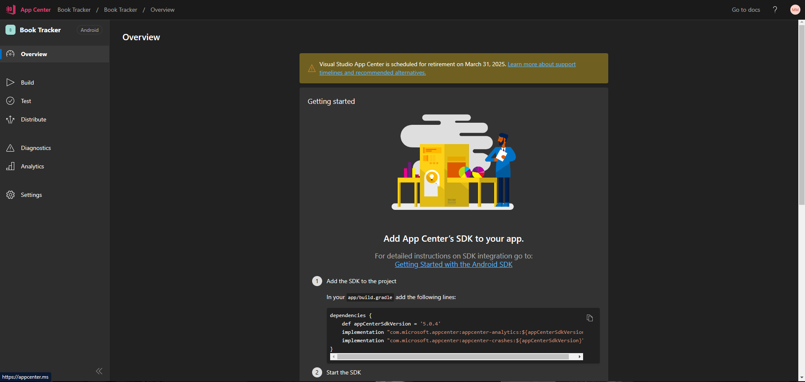
-
Buka menu
Builddan pilih GitHub sebagai servis penyedia repositori aplikasi. Pilihlah repositori aplikasi proyek kelompok kamu.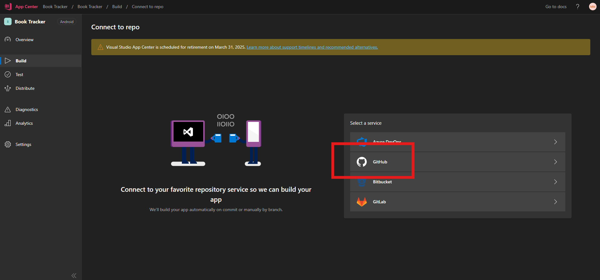
-
Buka branch utama kamu (
mainataumaster, silakan disesuaikan) dan klik tombolConfigure.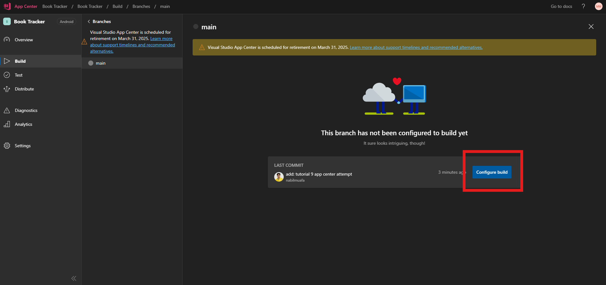
-
Ikuti pengaturan berikut:
- Nyalakan Environment variables
- Isi dengan name dan value berikut:
JAVA_HOME:$(JAVA_HOME_11_X64)KEY_JKS:<base64 dari keystoremu>KEY_PASSWORD:<password dari keystoremu>
- Centang
Sign builds, dan didalamnya centangMy Gradle settings are entirely set to handle signing automatically. - Centang
Distribute buildsdan radio buttonGroups. Centang grupContributorsdanPublicpada dropdown menuSelect destination. - Centang
Build status badge.
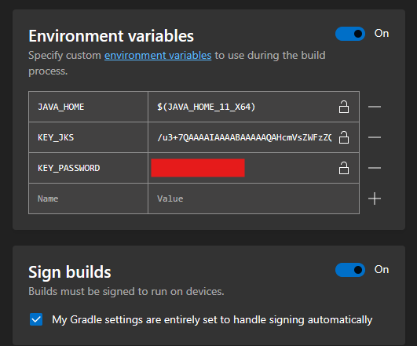 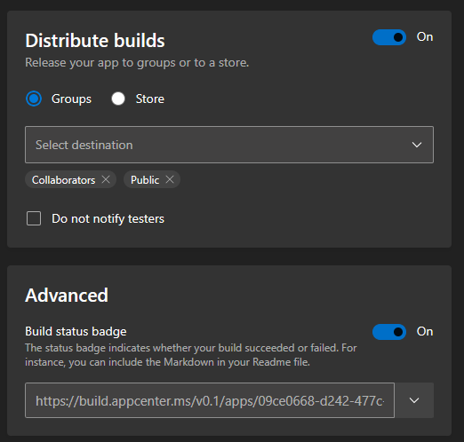
Catatan:
- Jangan lupa untuk mengganti
KEY_JKSdanKEY_PASSWORDdengan value yang sebenarnya. - Jangan lupa untuk membuat grup
Publicuntuk distribusi aplikasi secara publik. - Salinlah tautan build badge dengan format
Markdowndan tempelkan keREADME.mdrepositorimu.


-
Klik tombol
Save & Builduntuk menyimpan konfigurasi dan memulai proses build perdana.Kamu dapat mengecek tautan publik dari publikasi aplikasi pada App Center melalui menu Distribute -> Groups -> Public. Kamu juga dapat menyalin tautan publik dari publikasi aplikasi.
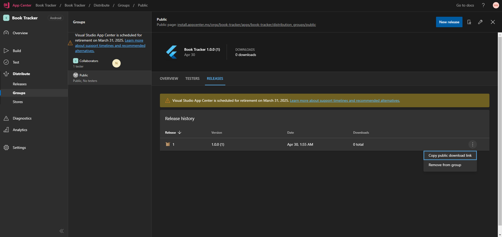
-
Salinlah tautan publik dari publikasi aplikasi dan tempelkan ke
README.md
Akhir Kata
Selamat, kamu telah berhasil untuk men-deploy aplikasi Flutter kamu ke App Center. Kamu dapat mengecek aplikasi yang telah kamu deploy dengan mengunduh berkas APK dari App Center dan menginstalnya pada ponsel pintar kamu.
Dan kita, sudah resmi, menamatkan tutorial PBP Semester Genap 2023/2024! Terima kasih telah mengikuti dan mengerjakan semua tutorial PBP Semester Genap 2023/2024. Tim pengajar ingin mengucapkan apresiasi kepada semua mahasiswa yang telah berpartisipasi dan berkontribusi dalam mata kuliah ini. Tim pengajar melihat usaha dan dedikasi yang telah kalian tunjukkan dalam menghadapi tantangan pengembangan aplikasi multiplatform pada mata kuliah ini.
Selama proses lab dan tugas, kita telah menggali konsep dan prinsip dasar yang mendasari pengembangan aplikasi web dan mobile menggunakan Django dan Flutter. Kalian telah mempelajari tentang arsitektur, fitur, dan alat yang dapat membantu dalam membangun aplikasi yang tangguh dan responsif di kedua platform ini.
Tim pengajar berharap lab dan tugas yang diberikan dapat memberikan pemahaman yang lebih mendalam tentang potensi dan tantangan dalam pengembangan aplikasi multiplatform serta memberikan kalian keterampilan yang berguna dan dapat diterapkan dalam karir kalian sebagai pengembang perangkat lunak.
Namun, pembelajaran tidak berhenti di sini. Dunia pengembangan terus berkembang dengan cepat, dan penting untuk tetap mengikuti perkembangan terbaru dalam industri ini. Tim pengajar mendorong kalian untuk terus belajar dan menjaga keterampilan kalian tetap relevan dengan membaca referensi lainnya, mengikuti kursus lanjutan, dan mengambil bagian dalam proyek-proyek nyata.
Akhir kata, ingatlah bahwa pengembangan aplikasi multiplatform adalah bidang yang menarik dan penuh potensi. Teruslah eksplorasi dan berinovasi, dan tim pengajar yakin kalian memiliki masa depan yang cerah sebagai pengembang perangkat lunak. Terima kasih dan semoga sukses dalam perjalanan kalian!
Do zobaczenia i powodzenia!
Kontributor
- Muhammad Nabil Mu'afa
Credits
Tutorial ini dikembangkan berdasarkan entri blog yang ditulis oleh Muhammad Athallah. Segala tutorial serta instruksi yang dicantumkan pada repositori ini dirancang sedemikian rupa sehingga mahasiswa yang sedang mengambil mata kuliah Pemrograman Berbasis Platform dapat menyelesaikan tutorial saat sesi lab berlangsung.